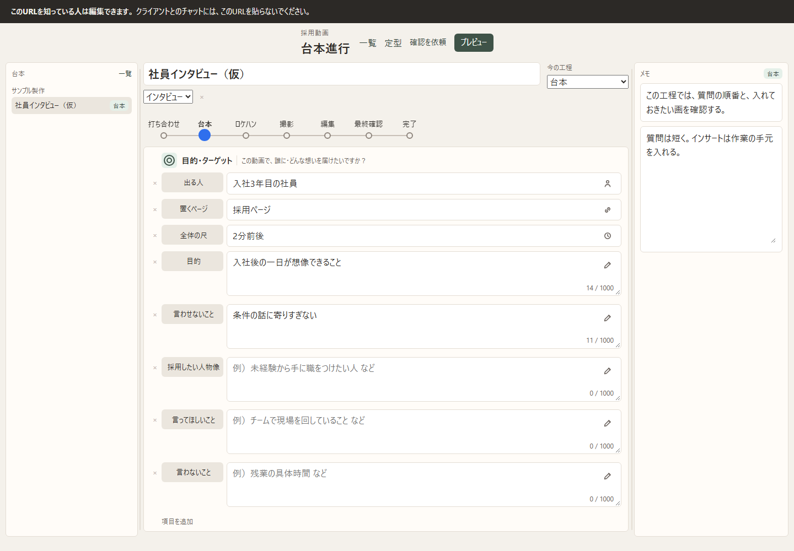
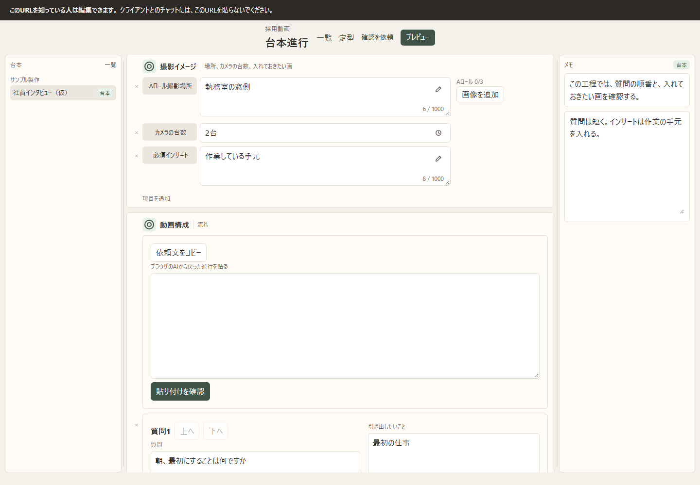
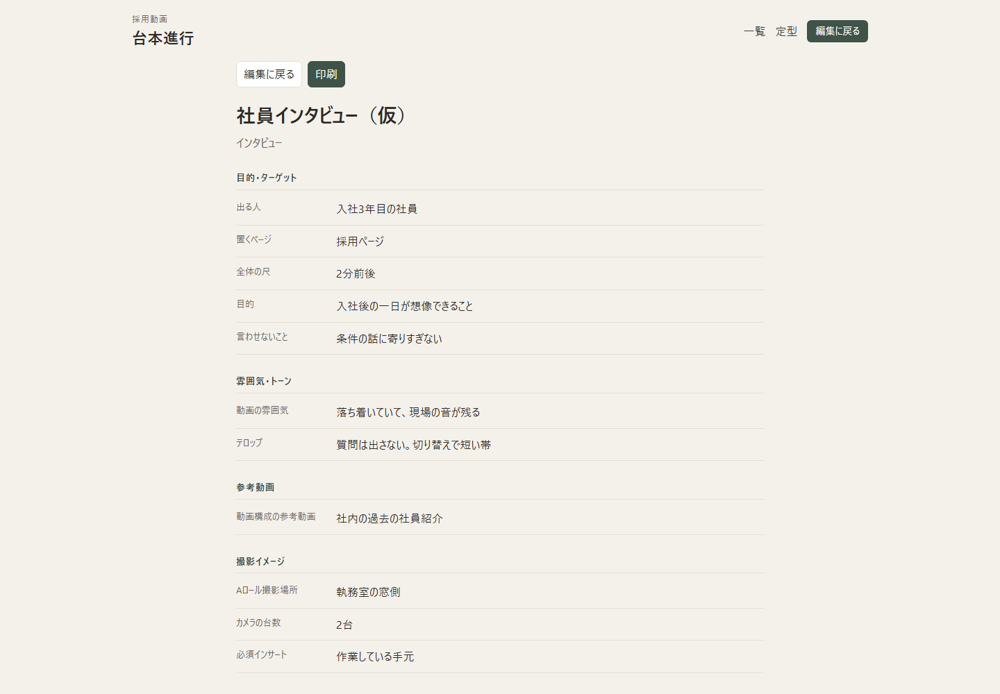

6ヶ月目 卒業制作
動画制作用の台本ツール
企画書、台本確認、インサート決め、進捗の把握をまとめたツールです。
いまは自分の把握用に動かしています。顧客に渡す確認は、ツールが整ってから足します。
作ったもの
採用サイトに入れるインタビューと対談を、企業ごとに1本の動画として開きます。画面の名前は「台本進行」です。
企画書誰が出るか、目的、雰囲気、参考にする動画を同じ場所に書きます。
台本確認質問とセリフを並べ、自分で読み返します。プレビューでは台本だけを見ます。
インサート決め撮影場所、カメラの台数、入れておきたい画を残します。
進捗の把握打ち合わせから完了まで、今の工程とメモを動画ごとに見ます。

工程は手で進めます。戻すこともできます。
打ち合わせ
台本
ロケハン
撮影
編集
最終確認
完了


解決する面倒・課題
採用コンサルの仕事で、企業ごとの採用動画を作っています。企画、台本の確認、インサート、進捗が別々の場所にあると、1本の動画のたびに探し直します。
これまでの置き場所
企画は文書、進捗は表、撮影で入れる画は別のメモです。
→
このツールでやること
企業ごとの情報を、このツール一本に置きます。1本を開けば、企画から今の工程まで見えます。
作りたいと思った理由
各企業の企画や確認、進捗などの情報を、このツール一本にしたかったからです。
表と文書に分かれたままでは、自分でも全体を追い切れません。まず自分が見て分かる形にまとめたくて作りました。
工夫したポイントと苦戦したポイント
工夫したこと
- 画面は台本として読める形にしました。表計算は保管場所で、操作画面にはしていません。
- 企業や動画によって項目が違うので、追加、削除、名前の変更ができます。
- 質問の下書きは、ブラウザのAIに頼んだ文章を貼って確認してから欄に入れます。このツール自身はAIを呼びません。
- プレビュー、コピー、印刷に出すのは台本だけです。進捗とメモは混ぜません。
- 一覧、台本、メモの幅は、境界をドラッグして変えられます。
苦戦したこと
- 削除が目立ち、プレビューの場所も分かりにくかったです。削除は欄の外の小さい印にし、プレビューは画面上部へ移しました。
- 枠とボタンの左端が少しずつずれていました。項目名、記入欄、質問の左を揃えました。
- 自分のパソコンの中だけで開くと、その場のサーバーを止めたときにページが開けなくなります。中身はブラウザに残ります。別のパソコンから開く公開は、これからです。
これから
今後は、自分の把握用に動かします。ツールとして整ってきたら、顧客に渡して確認してもらう機能を追加する予定です。